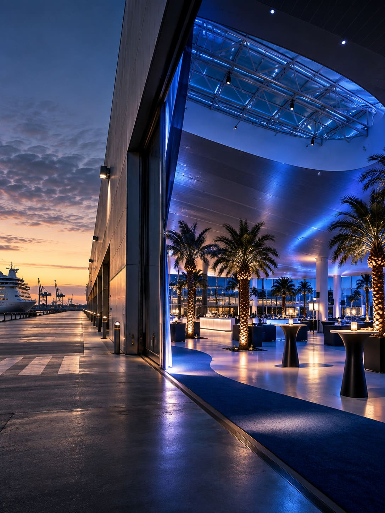
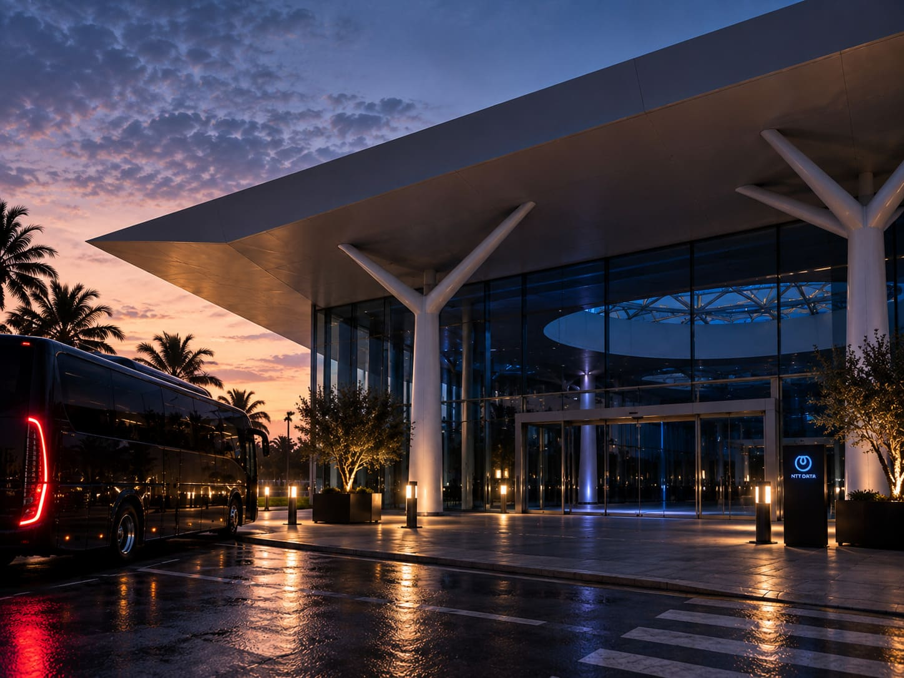
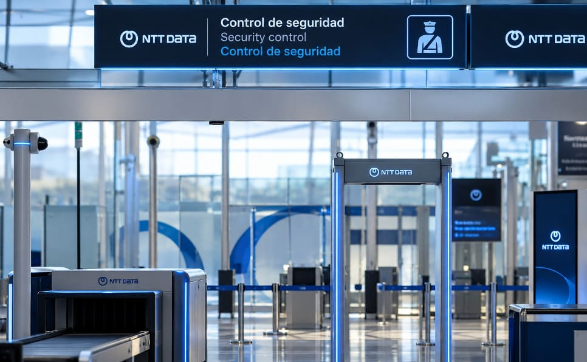
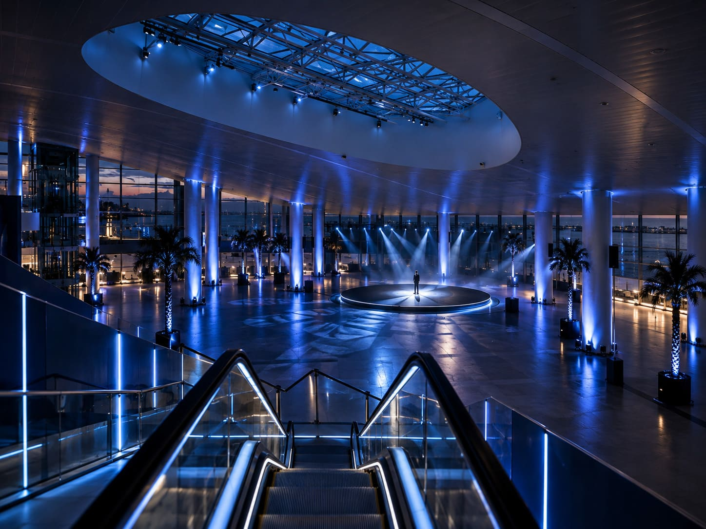
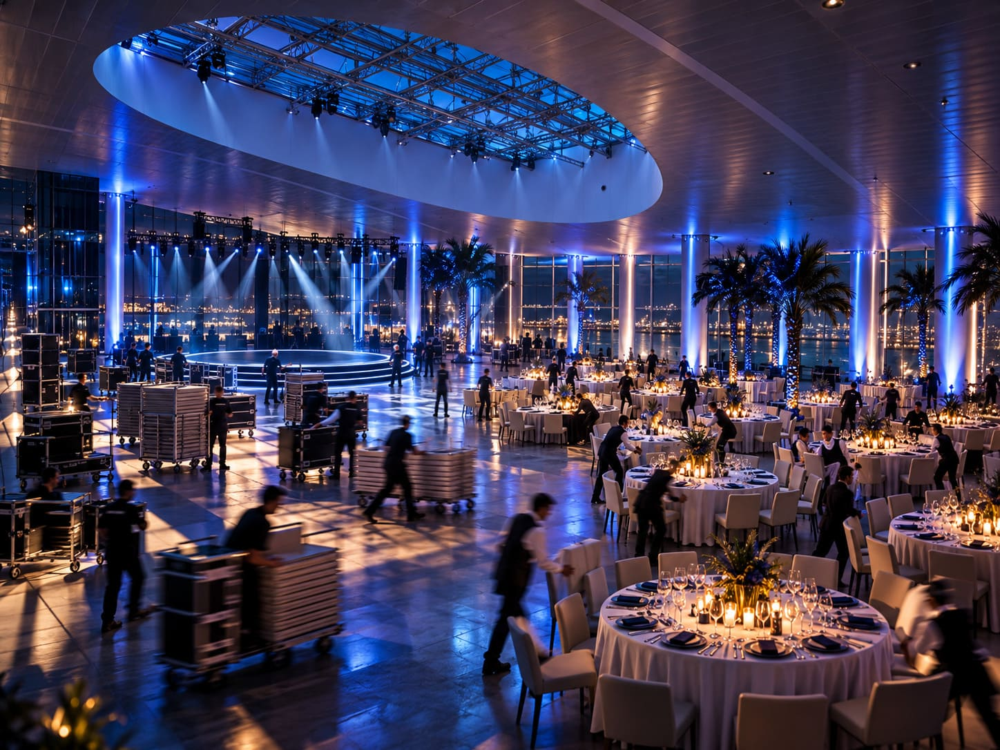
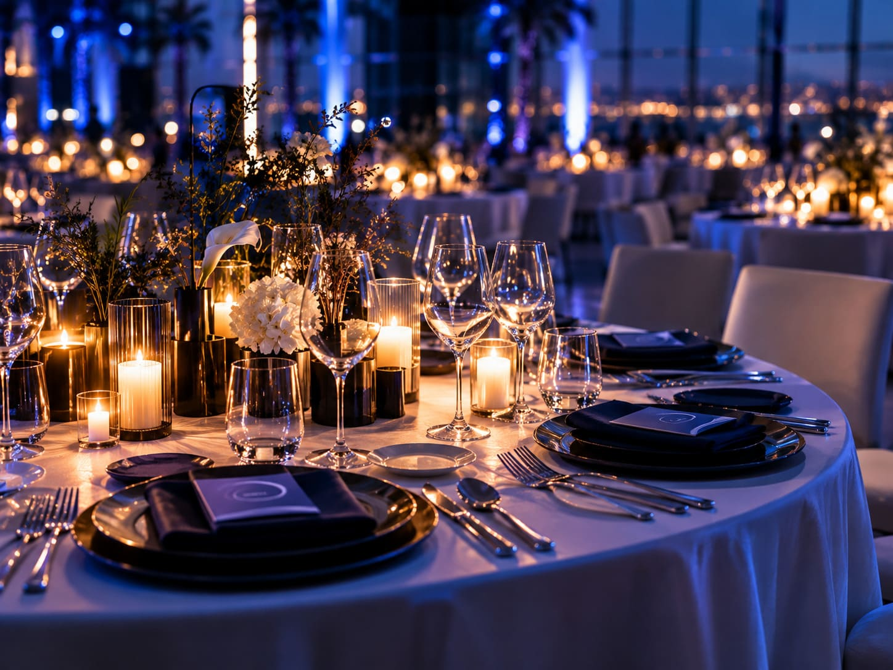
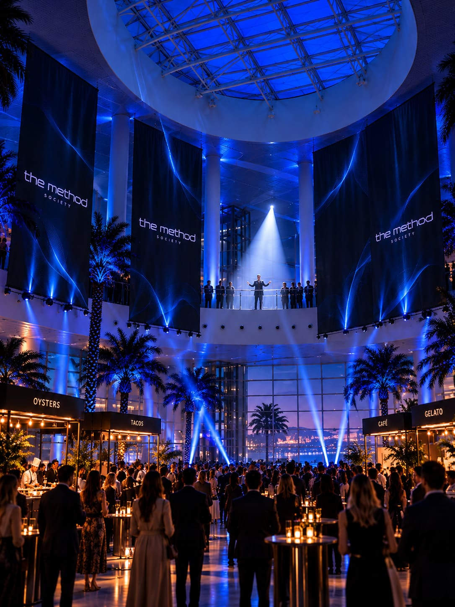
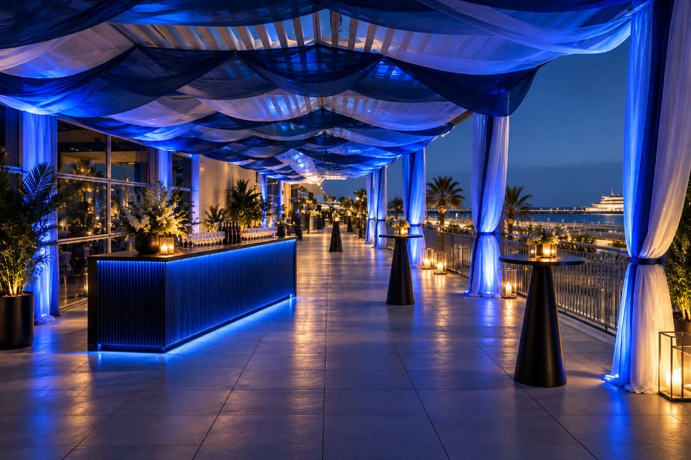
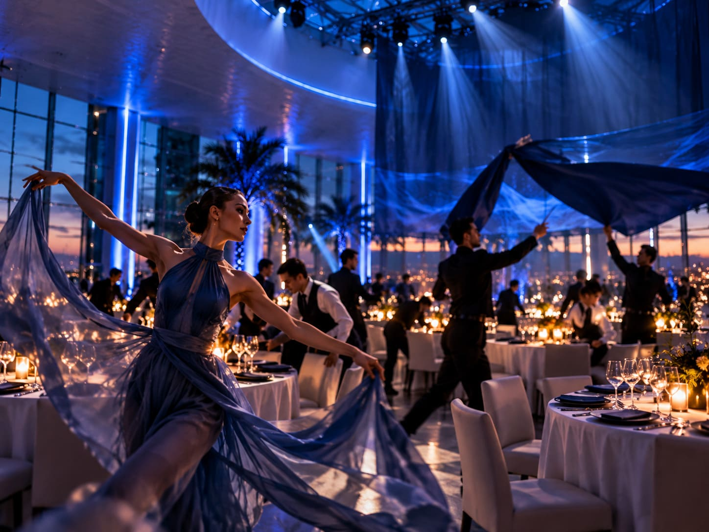

Proposal 03 · Industrial × transformation
TERMINAL D
PORT DE BARCELONA
THIS ISN'T A VENUE.
IT'S A BLANK CANVAS.
Why this place
NOTHING IS GIVEN.
EVERYTHING IS POSSIBLE.
Terminal D nos permite hacer algo que ningún otro venue puede ofrecer: construir THE METHOD prácticamente desde cero.
Una infraestructura portuaria de gran escala, industrial y aparentemente neutral se transforma, durante una sola noche, en el club secreto de los líderes del futuro.
Su ubicación en el Port, la escala del espacio y su enorme versatilidad nos permiten controlar el recorrido, la luz, el sonido, la tecnología y cada transición de la experiencia.

Concepto
ONE NIGHT.
ANOTHER WORLD.
Todo empieza como si se tratara de una llegada más. Los miembros abandonan el MWC y se dirigen hacia el Port de Barcelona sin saber exactamente qué van a encontrar.
Desde fuera, Terminal D sigue siendo una infraestructura portuaria. Sobria. Industrial. Casi neutral.
Pero detrás de sus puertas existe otro mundo. Durante unas horas, NTT DATA toma el control del espacio y lo convierte en THE METHOD: un enclave reservado para quienes están pensando, liderando y construyendo lo que viene después.
Arrival · The secret location
YOU KNOW WHERE.
NOT WHAT.
Tras abandonar el MWC, los miembros se desplazan hacia el Port de Barcelona. La ciudad cambia progresivamente hasta dejar paso al paisaje industrial y marítimo del Moll Adossat.
No hay una gran puesta en escena exterior. No queremos desvelar todavía lo que ocurre dentro. Terminal D aparece ante ellos como lo que parece ser: una terminal cerrada al público esta noche.
Solo algunos elementos de hospitality y una señal discreta indican que han llegado al lugar correcto.

Access control · Stamped for entry
ACCESS
GRANTED.

Entrar en THE METHOD requiere algo más que una invitación.
El acceso se inspira en el lenguaje de una terminal internacional. Cada miembro presenta su billete, valida su identidad y completa el control de entrada.
Un último gesto confirma el acceso: el billete THE METHOD queda sellado.
A partir de ese momento, el exterior queda atrás. Access granted.
The reveal · Entering another world
THE TERMINAL ENDS.
THE METHOD BEGINS.
Lo que parecía una terminal empieza a desaparecer.
Los miembros avanzan hacia el interior guiados por líneas de luz, sonido y una arquitectura efímera que transforma progresivamente su percepción del espacio.
Las escaleras mecánicas forman parte del reveal. Mientras descienden, la escala de Terminal D comienza a aparecer ante ellos.
Abajo les espera un gran espacio prácticamente vacío. Solo hay luz, un escenario y una persona esperando en el centro.

The transformation
DON'T HIDE THE CHANGE.
MAKE IT THE SHOW.
El gran diferencial de Terminal D no es únicamente cómo podemos transformar el espacio. Es permitir que los miembros vean cómo sucede.


CEO moment · A private address
BEFORE WHAT'S NEXT,
A FEW WORDS.

El espacio todavía está vacío. Todos los miembros están reunidos. Y THE METHOD está a punto de comenzar.
En el centro de Terminal D, el CEO de NTT DATA da la bienvenida a los miembros con una intervención breve y directa.
Al finalizar, una gran lona o elemento escenográfico descubre por primera vez el mensaje que define la noche:
THE METHOD
MANAGING WHAT'S NEXT
La música cambia. Los miembros se desplazan hacia el welcome drink. Y detrás de ellos empieza a suceder algo.
Ambientación y decoración
FROM EMPTY SPACE
TO PRIVATE DINNER.
Mientras los miembros disfrutan del aperitivo y el networking, Terminal D se transforma ante sus ojos.
Una coreografía perfectamente coordinada de equipo, camareros, mobiliario, luz y música convierte el gran espacio vacío en un banquete privado para 200 personas.

